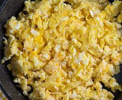

Tojásránrotta

A rántotta vagy tojásrántotta talán a legismertebb és legkedveltebb tojásétel. Nagyon egyszerű elkészíteni, így pár perc alatt tökéletes étel varázsolható.
- 5 db tojás
- 10 dkg sonka
- 10 dkg kolbász
- 1-2 csipetnyi só
- 1 evőkanál olaj
- 2-3 csipetnyi petrezselyem
- 1 csipet bors
- A kolbászt és a sonkát, apróra vágtam, majd megpirítottam egy kevés olajon.
- A tojásokat felvertem sóval, borssal ízesítettem, majd ráöntöttem a kolbászra és a sonkára.
- Pár perc alatt megsütöttem, akkor jó ha már nem folyós a teteje, tányérra tettem, és tálaltam is.